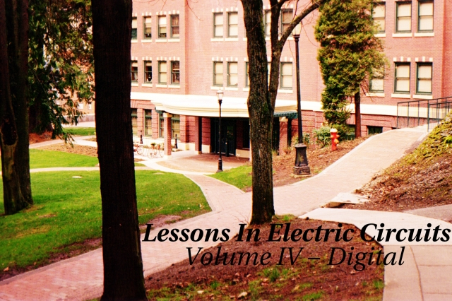
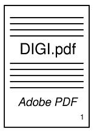
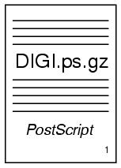
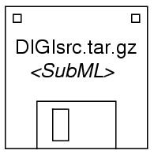
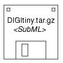

Copyright (C) 2000-2023, Tony R. Kuphaldt
Consulte la licencia Creative Commons CC BY (Apéndice 3) para obtener detalles sobre copia y distribucion
Revisado el 06 de noviembre de 2021
- Master Index
- Chapter 1: NUMERATION SYSTEMS
- Chapter 2: BINARY ARITHMETIC
- Chapter 3: LOGIC GATES
- Chapter 4: SWITCHES
- Chapter 5: ELECTROMECHANICAL RELAYS
- Chapter 6: LADDER LOGIC
- Chapter 7: BOOLEAN ALGEBRA
- Chapter 8: KARNAUGH MAPPING
- Chapter 9: COMBINATIONAL LOGIC FUNCTIONS
- Chapter 10: MULTIVIBRATORS
- Chapter 11: SEQUENTIAL CIRCUITS ***INCOMPLETE***
- Chapter 12: SHIFT REGISTERS
- Chapter 13: DIGITAL-ANALOG CONVERSION
- Chapter 14: DIGITAL COMMUNICATION
- Chapter 15: DIGITAL STORAGE (MEMORY)
- Chapter 16: PRINCIPLES OF DIGITAL COMPUTING
- Appendix 1: ABOUT THIS BOOK
- Appendix 2: CONTRIBUTOR LIST
- Appendix 3: CC BY LICENSE
Descargue versiones imprimibles de este volumen.
Formato Adobe PDF:

Aproximadamente 2,75 megasFormato Adobe PostScript (comprimido):

Aproximadamente 12 megas"¿Cómo veo y/o imprimo documentos PostScript?", preguntas? ¡Fácil! Simplemente descargue algún software gratuito en:www.cs.wisc.edu/~ghost.
Allí encontrarásGSview and Guión fantasma, dos programas necesario para mostrar e imprimir archivos Postscript (incluso mostrarán e imprimircomprimidoarchivos PostScript!). Estos programas también muestra y formatea archivos Adobe PDF como beneficio adicional. Versiones para Windows, OS/2 y Linux disponibles.
Descargar archivos fuente para este volumen

Aproximadamente 17 megas
Aproximadamente 1,5 megasPara "compilar" estos archivos fuente en un formato visible, deberá Necesita las siguientes piezas de software (todas disponibles gratuitamente en Internet):
- Hacer, una utilidad de gestión de proyectos originalmente pensada como una herramienta de programación, pero útil para gestionar casi cualquier tipo de Proyecto informático compuesto por muchos archivos.Si no puede obtener un copia de Make para su sistema informático, puede arreglárselas con un poco habilidad y algunos archivos por lotes (también conocidos como scripts de shell). el maestro "Makefile" en este directorio se puede leer con un editor de texto o Word procesador, y contiene todas las instrucciones realizadas por el otro utilidades.
- Sed(Significa Stream EDitor), una utilidad UNIX común para realizar comandos de búsqueda y reemplazo en archivos de texto. Requerido para convierta el código fuente SubML a HTML, TeX, LaTeX y otros formatos.esto ¡Es todo lo que necesitas para generar resultados HTML!
- LaTeX2e, un sistema de formato de documentos diseñado como un extensión de TeX, el destacado sistema de procesamiento de textos de Donald Knuth. También puedes arreglártelas simplemente con TeX, pero tu salida impresa no lucirá igual de bonito y carecerá de tabla de contenidos y entradas de índice.
Si opta por el más pequeño de los dos archivos (DIGItiny.tar.gz), podrá También necesita un conjunto de utilidades de manipulación gráfica lanzadas como un paquete. llamadoImagenMagia. Específicamente, la utilidad que necesitará es nombradomogrificar. El mayor de los dos archivos fuente. contiene todas las imágenes gráficas en dos formatos, PostScript encapsulado (*.eps) y JPEG (*.jpg). Esto lo convierte en un archivo grande. el mas pequeño El archivo fuente solo contiene PostScript encapsulado para esquemas. diagramas e imágenes JPEG para fotografías. Esto hace que sea mucho más pequeño archivo, pero requiere que usted realice alguna conversión de imagen por su parte. si tiene acceso a otro software de manipulación de imágenes capaz de Al convertir cientos de archivos con un comando por lotes, no tendrá que hacerlo. Utilice ImageMagick.
Back to Master Index